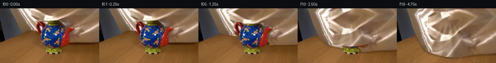

![首帧]()

Round 00
2026-11-05T17:16:12.354679+00:00像素候选变化代码 +232/−0inspection 更新
pixels e7ea51efdbd22c01 · code 9aa1d0952d4e526c
查看本轮 generate.py 真实 diff
--- previous/generate.py
+++ current/generate.py
@@ -0,0 +1,232 @@
+"""Deterministic local RGB continuation; no image viewers or external assets."""
+from pathlib import Path
+import json
+import shutil
+import numpy as np
+from PIL import Image, ImageDraw
+from scipy.ndimage import gaussian_filter, map_coordinates, distance_transform_edt, binary_dilation
+from artifact_io import save
+
+ROOT = Path(__file__).resolve().parent
+W, H = 256, 144
+Y, X = np.mgrid[:H, :W].astype(np.float64)
+INITIAL = np.asarray(Image.open(ROOT / 'first_frame.png').convert('RGB')).copy()
+assert INITIAL.shape == (H, W, 3)
+
+def smoothstep(v):
+ v = np.clip(v, 0., 1.)
+ return v*v*(3.-2.*v)
+
+def poly(points):
+ im = Image.new('L', (W*4, H*4), 0)
+ ImageDraw.Draw(im).polygon([(round(x*4), round(y*4)) for x, y in points], fill=255)
+ return np.asarray(im.resize((W, H), Image.Resampling.LANCZOS), dtype=float)/255.
+
+# Only coordinate measurements of the single input inform these footprints.
+BODY = poly([(113,42),(123,42),(143,43),(159,45),(166,53),(166,85),
+ (162,99),(153,105),(126,105),(115,100),(109,92),(103,78),(104,60)])
+LID = poly([(112,35),(125,32),(138,32),(146,30),(156,30),(164,32),
+ (167,37),(169,45),(164,50),(124,47),(114,43)])
+SPOUT = poly([(102,32),(96,34),(93,38),(91,47),(91,55),(94,63),(95,68),
+ (99,73),(105,76),(110,68),(112,50),(112,39),(108,34)])
+HANDLE = poly([(163,49),(171,46),(181,46),(187,48),(192,50),(195,54),
+ (193,59),(184,67),(181,83),(183,94),(179,102),(168,105),
+ (156,99),(157,91),(164,83),(166,71),(163,61)])
+FOOT = poly([(119,102),(151,102),(160,106),(164,110),(163,117),(157,120),
+ (146,123),(135,125),(124,122),(117,119),(112,113),(113,107)])
+OBJECT = np.maximum.reduce([BODY, LID, SPOUT, HANDLE, FOOT])
+OBJECT_BOOL = OBJECT > .12
+OCCLUDED = binary_dilation(OBJECT_BOOL, iterations=3)
+
+# Free edge at rest and after the cloth has passed over the stationary pot.
+initial_hem = np.interp(np.arange(W),
+ [0,25,26,55,90,109,137,160,183,255], [-20,-1,0,58,58,61,70,85,89,89])
+final_hem = np.interp(np.arange(W),
+ [0,25,26,40,54,66,81,99,124,146,169,190,213,255],
+ [-20,-1,0,48,83,105,116,121,127,129,127,124,121,119])
+SOURCE_SILK = (Y <= initial_hem[None,:]) & (X >= 26)
+KNOWN = SOURCE_SILK & ~OCCLUDED
+
+# Extend the photographed material into hidden areas, with no pot-color donor.
+# Right-hand cloth strip is shifted left; beyond its edge it is mirrored.
+donor_x = X+88.
+donor_x = np.where(donor_x > 255., 510.-donor_x, donor_x)
+donor_x = np.clip(donor_x, 194., 255.)
+donor_y = np.clip(Y-3., 0., 86.)
+cloth_donor = np.stack([map_coordinates(INITIAL[:,:,c].astype(float),
+ [donor_y, donor_x], order=1, mode='nearest') for c in range(3)], axis=2)
+
+# A normalized local color interpolation supplies a gentle color bridge across
+# the patch boundary. Original measured material remains exact at known pixels.
+weights = gaussian_filter(KNOWN.astype(float), 13., mode='nearest')
+local_color = np.stack([gaussian_filter(INITIAL[:,:,c].astype(float)*KNOWN,
+ 13., mode='nearest')/np.maximum(weights,1e-9) for c in range(3)], axis=2)
+missing = ~KNOWN
+_, nearest = distance_transform_edt(missing, return_indices=True)
+nearest_color = INITIAL[nearest[0], nearest[1]].astype(float)
+local_color = np.where((weights>.0001)[:,:,None], local_color, nearest_color)
+interpolated = .75*cloth_donor + .25*local_color
+# Feather the hidden patch only within source silk. Real visible folds remain.
+inside_distance = distance_transform_edt(missing)
+patch_weight = smoothstep(inside_distance/6.)
+TEXTURE = INITIAL.astype(float)*(1-patch_weight[:,:,None]) + interpolated*patch_weight[:,:,None]
+TEXTURE[KNOWN] = INITIAL[KNOWN]
+
+# Fine fiber noise is constructed locally; amplitude is below a display pixel.
+rng = np.random.default_rng(159)
+fiber = gaussian_filter(rng.normal(size=(H,W)), (.28,1.1))
+fiber /= max(float(fiber.std()), 1e-8)
+
+# A dome over the body, raised lid, and separate side shoulders support silk.
+dome = 27.*np.exp(-.5*((X-137.)/34.)**2-.5*((Y-78.)/41.)**2)
+dome += 10.*np.exp(-.5*((X-139.)/18.)**2-.5*((Y-40.)/13.)**2)
+dome += 5.*np.exp(-.5*((X-102.)/13.)**2-.5*((Y-56.)/16.)**2)
+dome += 6.*np.exp(-.5*((X-174.)/13.)**2-.5*((Y-70.)/26.)**2)
+
+frames = [INITIAL.copy()]
+metrics = []
… diff truncated; 145 more lines …